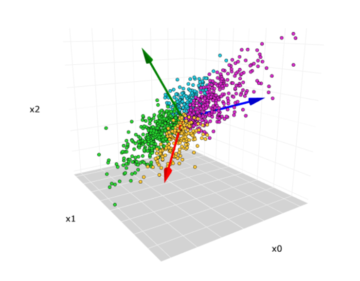
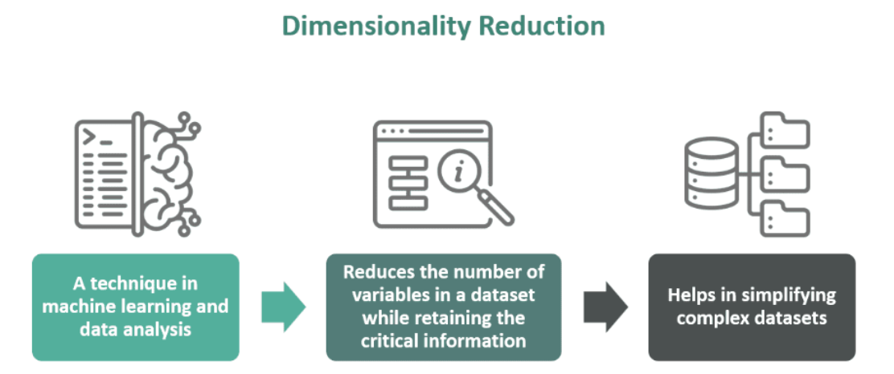
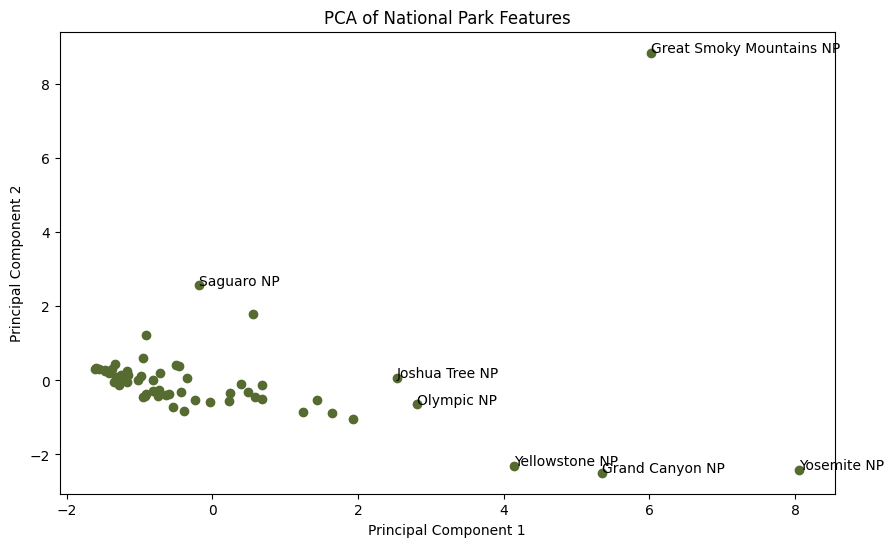
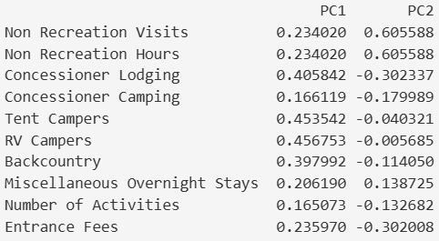
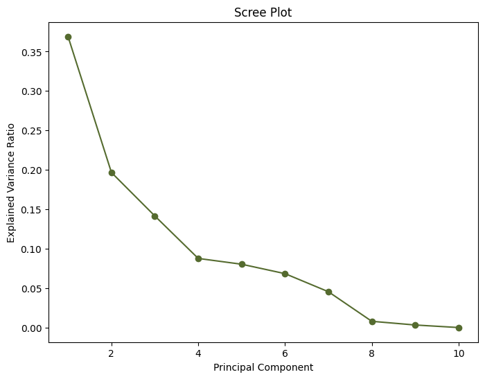

National Park Crowding Analysis
Overview
Principal Component Analysis (PCA) is a statistical process that conducts dimensionality reduction that reduces the number of features in a dataset while still keeping the most amount of information. PCA uses eigenvectors to define what the directions are of the axes, principal components. Eigenvalues represent the amount of variance explained along each of those directions, and components with higher eigenvalues capture more information. Dimensionality reduction is the process of removing features while minimizing information loss. This is important because having fewer features helps with computational efficiency, reduces unnecessary noise, and makes data easier to analyze. This can help relay information to stakeholders easier rather than having to explain various different factors leading towards a response.
PCA is also important because it reduces storage, aids in finding patterns more easily, and cuts processing time. High dimensionality data can make analysis difficult because it can make finding meaningful results trickier or take longer to find. Taking longer to find results can end up being costly financially. The reduction of noise leads to overall more efficient results with less work.

Data Preparation
PCA uses numeric variables because it finds patterns based on the variance and relationships between quantitative features. Categorical variables such as park name, park code, and state were removed from the analysis and only numeric variables related to recreation, camping, lodging, activities, and entrance fees were used to form clusters. To further prepare the data, the dataset was aggregated by park name and the mean value of each feature picked was calculated, resulting in a single row that represented the average recreation, camping, lodging, and visitation characteristics of each park. Therefore, the dataset was reduced to one row for each national park for clustering analysis. I originally was going to leave visitation data, but after seeing the k-means results were mainly influenced by the sheer differences in visitation, I decided to remove 'Recreation Visits' and 'Visitation Hours' to determine what other features lead to certain grouping.

Results
To reduce the dimensionality of the dataset, PCA was performed on the standardized park-level features. The first principal component (PC1) explained 36.9% of the variance in the data, while the second principal component (PC2) explained 19.7%. Together, the first two principal components accounted for 56.6% of the total variance, indicating that a majority of the information contained in the original ten variables could be summarized using only two dimensions.


Since most of the national parks seem to gather together we can say that they have similar recreation, camping, lodging, and visitation characteristics. Notable outliers include:
- Saguaro National Park seems to be most separated from the left group of parks, suggesting that it has a unique combination of park characteristics. From the principal components table we can see that Non Recreation Visits and Non Recreation Hours contribute most to Principal Component 2, which may help explain why Saguaro is separated from other parks.
- Yosemite is high on Principal Component 1, meaning that its camping, lodging, and backcountry recreation characteristics are more unique compared to many other parks.
- Great Smoky Mountains National Park is the most obvious outlier because it has unique recreation and visitation patterns that separate it from the rest of the national parks in the dataset.

The "bend" in the scree plot is around the fourth principal component suggesting that the first four principal components capture most of the variance. After the fourth component the amount of variance explained starts to decrease indicating that additional components contribute less new information. This suggests that the variation in national parks can be captured using a few principal components rather than all ten features.
The PCA loadings showed that PC1 was primarily influenced by tent campers, RV campers, concessioner lodging, and backcountry recreation. This suggests that PC1 represents overall overnight recreation activity. PC2 was driven mainly by non-recreation visits and non-recreation hours, indicating that it captures differences in non-recreation park usage. These findings are consistent with the clustering analysis, which also found that camping, lodging, and recreation infrastructure were major factors separating parks into distinct groups.
Conclusions
Through PCA the number of features was reduced from the original ten variables into a smaller number of principal components while still minimizing information loss. The first two principal components explained 56.6% of the total variance and revealed that camping, lodging, backcountry recreation, and non-recreation visitation were the primary factors causing differences among national parks. The PCA results go hand-in-hand with the clustering analysis by finding that major destination national parks such as Yosemite, Yellowstone, Grand Canyon, and Great Smoky Mountains are much different from the other majority of parks. Overall, PCA provided a useful way to simplify the data and better understand the key characteristics associated with national park visitation and recreation patterns.